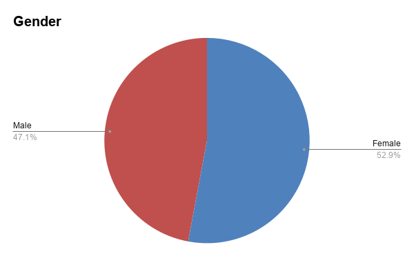

Data
Sample
1. Characteristics of the Sample
In this survey paper, we examine public awareness of dog financial support and
whether raising the tax on breeding dogs would make people more willing to adopt a
dog.
1.1 Total Sample Size
51 people took our survey.
Age, gender
1.2 Gender 53% of them are female, 47% of them are male. I chose a Pie chart for this data because it has 2 categories, and I want to show the total breakdown of gender. (it’s shown on the pie chart)
1.3 Age Distribution 23.5% of them are below 18, 17.6% of them are 18-24, 19.6% of them are 25-34, 21.6% of them are 35-44, 11.8%of them are 45-54, 5.9%of them are 55-64. I chose a Bar chart for this data because it has 6 categories, and I want to show the total breakdown of the age group. (it’s shown on the bar graph)

Survay Q
Q1
Q1: Do you know of any financial support for adopted dogs?
We wanted to know how much the public is aware of money help for adopted dogs. This question is
single-choice, and it collects categorical data. The results show that most people said they are not
aware of any help, and fewer people said that they are aware. Because of this, the chart shows that
the answer “No” is very high.

Q2
Q2: Please name any financial support you know of for dog ownership in general.
We wanted to know how the public is aware of money help for dogs. This question is open-ended, and
it collects categorical data. Most people said that they are not aware. The chart shows that the
answer “No” is very high, and most of the people cannot name any programs. Fewer people did name the
Guide Dog Association (導盲犬協會) for subsidized adoption, as well as annual food and rabies vaccines
(一年糧食與狂犬病疫苗).

Q3
Q3: Would you be more inclined to adopt if rescue centres offered financial planning support?
If we want to raise dog adoption rates, we wanted to see if giving people money planning help is a
good way. This question is single-choice. The options are strongly agree, agree, neutral, disagree,
strongly disagree, and would not adopt. This question collects categorical data. The results show
that most people said they agree. Fewer people said they strongly disagree, and fewer people said
they would not adopt a dog. People split into two big groups: agree or disagree. Looking at the
numbers, 49% of people agree or strongly agree, while 37.3% of people disagree or strongly disagree,
so more people choose agreement.

Q4
Q4: Should taxes be increased on dogs purchased from breeders / pet shops?
We want to know if it is a good idea to increase taxes on dogs bought from breeders or pet shops.
This question is single-choice, and the options are strongly agree, agree, neutral, disagree, and
strongly disagree. This question collects categorical data. The results show that most people said
they disagree, and fewer people said they strongly disagree. People split into two big groups: agree
or disagree. 37.2% of people agree or strongly agree, while 39.2% of people disagree or strongly
disagree, meaning more people choose disagreement. A less common answer is neutral, which 23.5% of
people chose.

Q5
Q5: If increased vet care options were available for adopted dogs, would you be more inclined to
adopt?
If we want to raise dog adoption rates, we wanted to see if giving people this financial support is
a good way. This question is single-choice, and the options are strongly agree, agree, neutral,
disagree, not answer, and would not adopt. This question collects categorical data. The results show
that 72.5% of people said that they agree, and 9.8% of people answered strongly agree. Fewer people
said neutral. The chart shows that the answer "Yes" is very high, with 72.5% of people thinking it
will make them more inclined to adopt a dog. The second least common answer is strongly agree, with
9.8% of people answering that. Compared to the people who disagree, there is a huge gap of 21 times
between them.